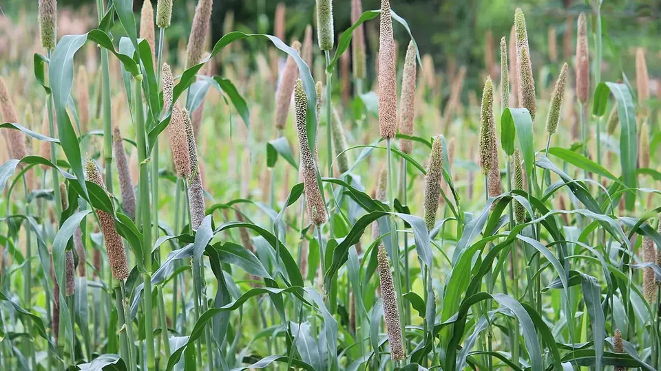

बाजरे में जोगिया रोग (हरी बाली)
Downy Mildew / Green Ear Disease in Pearl Millet — Identification & Control
बाजरे की पत्ती आधार से ऊपर तक पीली-भगवा और बाली में दाने की जगह हरी पत्तियों का गुच्छा — यह जोगिया रोग है। ग्रस्त पौधे से दाना आधा नहीं, शून्य मिलता है।
✍️ Kunal Rajput — KrashiMitra⏱️ 9 मिनट पढ़ें📅 जुलाई 2026

बाजरे की स्वस्थ बाली — जोगिया रोग में यही बाली हरी पत्तियों के गुच्छे में बदल जाती है।
राजस्थान के बाजरे का सबसे बड़ा रोग — जोगिया (डाउनी मिल्ड्यू)
📉
60% तक
उपज का नुकसान
🌾
हरी बाली
सबसे पक्की पहचान
🌱
6 ग्राम/किलो
मेटालैक्सिल बीज उपचार
📖
भूमिका
बारिश के बाद बाजरे का खेत हरा-भरा उठता है, और फिर कुछ पौधों की पत्तियाँ नीचे से ऊपर की ओर पीली-भगवा (जोगिया) पड़ने लगती हैं। सुबह ओस में उन्हीं पत्तियों के नीचे सफेद रुई जैसी परत दिखती है। और सबसे आखिर में सबसे बड़ा धोखा — बाली निकलती है, पर उसमें दाना नहीं, हरी पत्तियों का गुच्छा होता है। इसी को राजस्थान में जोगिया रोग या हरी बाली रोग कहते हैं; किताबों में इसका नाम डाउनी मिल्ड्यू (Downy Mildew, Sclerospora graminicola) है।
राजस्थान देश का सबसे बड़ा बाजरा उत्पादक राज्य है — जयपुर, नागौर, अलवर, बाड़मेर, जोधपुर, चूरू, बीकानेर और भरतपुर की पूरी पट्टी इसी फसल पर टिकी है। और इस पूरी पट्टी में जोगिया रोग बाजरे का सबसे बड़ा नुकसान करने वाला रोग है। सबसे ज़रूरी बात जो ज़्यादातर किसान नहीं जानते: यह रोग खेत में तब लगता है जब पौधा सिर्फ 10–20 दिन का होता है, लेकिन दिखता 30–40 दिन बाद है। इसीलिए बाली निकलने के बाद छिड़काव करने से कुछ नहीं होता — असली इलाज बीज उपचार है, और वह बुवाई से पहले ही हो सकता है।
विज्ञापन
🔬
जोगिया रोग क्या है?
यह एक फफूंद जैसी जीव (ऊमाइसीट) से होने वाला रोग है। इसका बीजाणु दो रूपों में रहता है —
ऊस्पोर (oospore): मोटी दीवार वाला बीजाणु जो मिट्टी और फसल अवशेष में कई साल तक ज़िंदा रह सकता है। यही अगले साल की पहली संक्रमण की जड़ है।
स्पोरैंजिया: पत्ती के नीचे बनने वाली सफेद रुई जैसी परत — यह रात की ओस और नमी में बनती है और हवा से पड़ोसी पौधों तक फैलती है।
संक्रमण जड़ और अंकुर के रास्ते पौधे में घुसता है और फिर पूरे पौधे में फैल जाता है (systemic infection)। इसीलिए एक बार रोग लग जाने पर उस पौधे को दवा से "ठीक" नहीं किया जा सकता — उसे सिर्फ खेत से निकाला जा सकता है।
💡
यह रोग किस मौसम में सबसे ज़्यादा फैलता है?20–25°C तापमान, 85% से ज़्यादा नमी, लगातार बादल और हल्की-हल्की बारिश — यानी राजस्थान में जुलाई-अगस्त का मानसूनी मौसम। जिस साल बुवाई के तुरंत बाद लगातार बादल रहें, उस साल जोगिया रोग की आशंका सबसे ज़्यादा होती है।
🔍
पहचान — खेत में क्या देखें
पत्ती नीचे से ऊपर पीली: पत्ती के आधार (डंठल वाले सिरे) से शुरू होकर ऊपर की ओर बढ़ती हुई पीली-भगवा धारियाँ। पत्ती आधी हरी–आधी पीली दिखती है — यही "जोगिया" रंग है।
पत्ती के नीचे सफेद परत: सुबह ओस के समय पत्ती पलटकर देखें — रुई या पाउडर जैसी सफेद-भूरी परत मिलेगी। धूप चढ़ते ही यह सूखकर गायब हो जाती है, इसलिए जाँच सुबह ही करें।
पत्ती का फटना (shredding): रोग बढ़ने पर पत्ती लंबाई में रेशे-रेशे होकर फट जाती है।
पौधा बौना और झाड़ीनुमा: ग्रस्त पौधा आसपास के पौधों से छोटा रह जाता है और उसमें ज़्यादा कल्ले निकल आते हैं।
हरी बाली (Green Ear): सबसे पक्की पहचान — बाली की जगह हरी पत्तियों जैसा गुच्छा बन जाता है। इसमें एक भी दाना नहीं बनता।
खेत में धब्बों की तरह: रोग पूरे खेत में एकसार नहीं, जगह-जगह टुकड़ों में दिखता है — खासकर नीचे वाले, पानी रुकने वाले हिस्सों में।
पहचान बिंदु
✅ स्वस्थ बाजरा
❌ जोगिया रोग ग्रस्त
पत्ती का रंग
एकसार गहरी हरी
आधार से ऊपर तक पीली-भगवा धारियाँ
पत्ती के नीचे
साफ
सुबह सफेद रुई जैसी परत
पौधे की ऊँचाई
सामान्य, एकसार
बौना, झाड़ीनुमा, ज़्यादा कल्ले
बाली
भरी हुई, दाने वाली
हरी पत्तियों का गुच्छा, दाना शून्य
पत्ती की बनावट
पूरी, मज़बूत
लंबाई में रेशों में फटी हुई
उपज
पूरी
ग्रस्त पौधे से शून्य
💡
खेत में कितना रोग है, यह कैसे नापें? खेत के अलग-अलग हिस्सों में 4–5 जगह 100-100 पौधे गिनें और उनमें से ग्रस्त पौधों की संख्या नोट करें। अगर 5% से ज़्यादा पौधे ग्रस्त हैं, तो इस साल रोगिंग (उखाड़ना) और छिड़काव दोनों ज़रूरी हैं — और अगले साल के लिए बीज उपचार तथा किस्म बदलना तय समझिए।
📉
नुकसान कितना होता है?
जोगिया रोग का नुकसान इस बात पर निर्भर करता है कि किस्म कितनी संवेदनशील है और मौसम कितना नम रहा। संवेदनशील संकर किस्मों में यह 10% से 60% या उससे भी ज़्यादा उपज ले जा सकता है, जबकि प्रतिरोधी किस्मों में उसी खेत में नुकसान बहुत कम रहता है।
इसका असल गणित यह है: जो पौधा ग्रस्त हो गया, उससे दाना शून्य मिलता है — आधा नहीं, शून्य। यानी अगर खेत के 20% पौधे ग्रस्त हैं, तो सीधे-सीधे 20% उपज गई। चारा भी खराब होता है, क्योंकि ग्रस्त पौधे की पत्तियाँ फटी और कमज़ोर होती हैं।
विज्ञापन
🛡️
बिना पैसे खर्च किए रोकथाम
रोगिंग — ग्रस्त पौधे उखाड़कर नष्ट करें: यह सबसे सस्ता और सबसे असरदार काम है। ग्रस्त पौधे को हरी बाली बनने से पहले जड़ समेत उखाड़कर खेत से बाहर ले जाकर जला दें या गहरा गाड़ दें। हरी बाली बनने के बाद उससे लाखों बीजाणु मिट्टी में गिर जाते हैं, जो कई साल तक वहीं ज़िंदा रहते हैं।
ग्रस्त पौधे खेत की मेड़ पर न फेंकें: यह सबसे आम गलती है — पौधा उखाड़कर वहीं मेड़ पर डाल दिया जाता है और बीजाणु फिर उसी खेत में लौट आते हैं।
फसल चक्र अपनाएँ: यह रोग बाजरे पर ही पलता है। हर 2–3 साल में उसी खेत में मूंग, मोठ, ग्वार, तिल या चँवला लें — मिट्टी में बीजाणु का भंडार अपने आप घटता है।
गर्मी की गहरी जुताई: मई-जून में गहरी जुताई करने से मिट्टी में पड़े बीजाणु ऊपर आकर तेज़ धूप में नष्ट होते हैं।
पानी रुकने न दें: खेत के नीचे वाले हिस्सों में पानी ठहरने से नमी बनी रहती है और रोग वहीं से शुरू होता है — नाली बनाकर पानी निकालें।
घनी बुवाई न करें: कतार से कतार 45 से.मी. और पौधे से पौधा 10–12 से.मी. रखें। हवा का आवागमन रोग को घटाता है।
पिछले साल के अवशेष हटाएँ: बुवाई से पहले खेत से पुराने बाजरे के ठूँठ, सूखी बालियाँ और खरपतवार साफ कर दें।
🌱
असली इलाज — बीज उपचार और सही किस्म
जोगिया रोग के लिए 90% लड़ाई बुवाई के दिन ही जीती या हारी जाती है। दो काम, दोनों बुवाई से पहले:
प्रतिरोधी किस्म चुनें: बाजरे की कई संकर किस्में डाउनी मिल्ड्यू के प्रति प्रतिरोधी बनाई गई हैं — जैसे HHB 67 इम्प्रूव्ड (जल्दी पकने वाली), RHB 177, HHB 299 और MPMH 17। हर साल नई किस्में जुड़ती हैं और पुरानी किस्मों का प्रतिरोध टूटता भी है, इसलिए बुवाई से पहले अपने जिले के कृषि विज्ञान केंद्र (KVK) से इस साल की अनुशंसित सूची ज़रूर लें।
मेटालैक्सिल से बीज उपचार: यही इस रोग का सबसे भरोसेमंद बचाव है — मेटालैक्सिल 35% WS की लगभग 6 ग्राम मात्रा प्रति किलो बीज। बीज को थोड़ा नम करके दवा मिलाएँ, छाया में सुखाएँ और उसी दिन बुवाई करें।
💡
खरीदा हुआ संकर बीज पहले से उपचारित होता है? अच्छी कंपनियों का प्रमाणित संकर बीज अक्सर पहले से मेटालैक्सिल-उपचारित (रंगीन) आता है — पैकेट पर लिखा रहता है। ऐसे बीज को दोबारा उपचारित करने की ज़रूरत नहीं। लेकिन घर का रखा हुआ या खुला बीज हमेशा खुद उपचारित करें।
🧪
खड़ी फसल में छिड़काव — दवा और मात्रा
खड़ी फसल में छिड़काव ग्रस्त पौधों को ठीक नहीं करता — यह सिर्फ बाकी स्वस्थ पौधों को नया संक्रमण लगने से बचाता है। इसीलिए इसका समय बहुत मायने रखता है: बुवाई के लगभग 20 दिन बाद पहला छिड़काव, और ज़रूरत पड़ने पर 12–15 दिन बाद दूसरा।
दवा (तकनीकी नाम)
मात्रा
कब उपयुक्त
मेटालैक्सिल 35% WS
लगभग 6 ग्राम/किलो बीज
बीज उपचार — सबसे ज़रूरी और सबसे सस्ता कदम
मेटालैक्सिल + मैंकोज़ेब (संयुक्त)
लगभग 2 ग्राम/लीटर पानी (≈1 किलो/हेक्टेयर)
बुवाई के 20 दिन बाद खड़ी फसल पर
मैंकोज़ेब 75% WP
लगभग 2 ग्राम/लीटर पानी (≈2 किलो/हेक्टेयर)
बचाव के लिए, हल्के प्रकोप में
ट्राइकोडर्मा / जैविक बीज उपचार
लेबल के अनुसार
जैविक खेती में — रासायनिक उपचार का विकल्प
⚠️
ऊपर दी गई मात्राएँ सामान्य अनुशंसा हैं। खरीदने से पहले डिब्बे के लेबल पर "बाजरा" और "डाउनी मिल्ड्यू / मृदुरोमिल आसिता" लिखा है या नहीं ज़रूर देखें — CIB&RC लेबल के बाहर का प्रयोग सही नहीं है। अंतिम मात्रा, किस्म और छिड़काव का समय अपने कृषि विज्ञान केंद्र (KVK) या जिला कृषि विभाग से पुष्टि करके ही तय करें, क्योंकि सिफ़ारिशें जिले और किस्म के अनुसार बदलती हैं।
🚫
ये गलतियाँ कभी न करें
हरी बाली बनने के बाद छिड़काव करना — तब तक पौधा पूरी तरह संक्रमित हो चुका होता है और दवा बेकार जाती है। पैसा भी गया, रोग भी रहा।
घर का रखा बीज बिना उपचार बोना — जोगिया रोग वाले खेत का बीज अगले साल रोग साथ लेकर आता है।
ग्रस्त पौधे मेड़ पर फेंकना — बीजाणु वापस उसी खेत में पहुँच जाते हैं। खेत से दूर ले जाकर जलाएँ या गाड़ें।
हर साल उसी खेत में बाजरा — मिट्टी में बीजाणु का भंडार साल-दर-साल बढ़ता है। फसल चक्र ही इसे तोड़ता है।
ज़्यादा नाइट्रोजन एक साथ डालना — पौधा मुलायम होकर रोग के प्रति और संवेदनशील हो जाता है; यूरिया बाँटकर दें।
दोपहर में रोग की जाँच करना — सफेद परत सिर्फ सुबह की नमी में दिखती है, धूप में गायब हो जाती है।
बहुत घनी बुवाई — नमी बनी रहती है और रोग तेज़ी से फैलता है।
🗓️
राजस्थान के लिए कैलेंडर — कब क्या करें
समय
ज़रूरी काम
मई – जून
गहरी जुताई, पिछले साल के अवशेष हटाना, KVK से प्रतिरोधी किस्म की सूची लेना
सुबह खेत घूमकर पीली पत्तियों वाले पौधे ढूँढें; ग्रस्त पौधे उखाड़ें; पहला छिड़काव
बुवाई + 30–35 दिन
दूसरी बार रोगिंग; ज़रूरत हो तो दूसरा छिड़काव; पानी की निकासी देखें
बाली निकलने से पहले
बचे हुए ग्रस्त पौधे हर हाल में हटा दें — हरी बाली बनने से पहले
कटाई के बाद
अवशेष खेत से हटाएँ; अगले साल के लिए फसल बदलने की योजना बनाएँ
✅
निष्कर्ष
जोगिया रोग महँगी दवा से नहीं, तीन सस्ते फैसलों से हारता है: प्रतिरोधी किस्म चुनना, बुवाई के दिन मेटालैक्सिल से बीज उपचार करना, और हरी बाली बनने से पहले ग्रस्त पौधे उखाड़कर खेत से बाहर नष्ट करना। तीनों का कुल खर्च एक छिड़काव से भी कम है।
याद रखें — बाजरे में जोगिया रोग का इलाज बाली में नहीं, बीज की थैली में रखा होता है।
विज्ञापन
❓
अक्सर पूछे जाने वाले सवाल
1बाजरे में जोगिया रोग (हरी बाली) की पहचान कैसे करें?
सबसे पहली पहचान है पत्ती का आधार से ऊपर की ओर पीला-भगवा होना और सुबह ओस में पत्ती के नीचे सफेद रुई जैसी परत दिखना। सबसे पक्की पहचान अंत में मिलती है — बाली की जगह हरी पत्तियों का गुच्छा (हरी बाली) बन जाता है जिसमें एक भी दाना नहीं होता। ग्रस्त पौधा बौना और झाड़ीनुमा भी रहता है।
2बाजरे में जोगिया रोग की सबसे असरदार दवा कौन सी है?
सबसे असरदार उपाय दवा नहीं, बीज उपचार है — मेटालैक्सिल 35% WS लगभग 6 ग्राम प्रति किलो बीज। खड़ी फसल में बुवाई के लगभग 20 दिन बाद मेटालैक्सिल + मैंकोज़ेब लगभग 2 ग्राम/लीटर पानी का छिड़काव किया जाता है, जो बचे हुए स्वस्थ पौधों को नया संक्रमण लगने से बचाता है।
3क्या जोगिया रोग लगे पौधे को दवा से ठीक किया जा सकता है?
नहीं — एक बार संक्रमित पौधा कभी ठीक नहीं होता, क्योंकि यह रोग पूरे पौधे में फैल चुका होता है (systemic infection)। ऐसे पौधे को हरी बाली बनने से पहले जड़ समेत उखाड़कर खेत से बाहर जलाना या गाड़ना ही एकमात्र सही कदम है, वरना उससे लाखों बीजाणु मिट्टी में गिर जाते हैं।
4बाजरे में जोगिया रोग किस मौसम में सबसे ज़्यादा लगता है?
20–25°C तापमान, 85% से ज़्यादा नमी और लगातार बादल-हल्की बारिश इस रोग के लिए सबसे अनुकूल हैं — राजस्थान में यह स्थिति जुलाई-अगस्त में बनती है। संक्रमण पौधे के 10–20 दिन की उम्र में होता है, जबकि लक्षण 30–40 दिन बाद दिखते हैं, इसलिए बचाव हमेशा पहले करना पड़ता है।
5जोगिया रोग से बचाने वाली बाजरे की किस्में कौन सी हैं?
डाउनी मिल्ड्यू के प्रति प्रतिरोधी मानी जाने वाली प्रचलित संकर किस्मों में HHB 67 इम्प्रूव्ड, RHB 177, HHB 299 और MPMH 17 शामिल हैं। ध्यान रहे कि समय के साथ किस्मों का प्रतिरोध कमज़ोर पड़ता है और नई किस्में आती रहती हैं — इसलिए हर साल बुवाई से पहले अपने जिले के KVK से इस साल की अनुशंसित सूची ज़रूर लें।
6जोगिया रोग से बाजरे की कितनी उपज घटती है?
संवेदनशील किस्मों में नुकसान 10% से 60% या उससे भी ज़्यादा हो सकता है। इसका गणित सीधा है — जो पौधा ग्रस्त हो गया, उससे दाना शून्य मिलता है, आधा नहीं। यानी अगर खेत के 20% पौधों में हरी बाली बनी, तो 20% उपज सीधे गई; चारे की गुणवत्ता भी गिर जाती है।
7क्या हर साल एक ही खेत में बाजरा बोने से जोगिया रोग बढ़ता है?
हाँ — इस रोग के ऊस्पोर (मोटी दीवार वाले बीजाणु) मिट्टी और फसल अवशेष में कई साल तक ज़िंदा रहते हैं, इसलिए लगातार बाजरा लेने से मिट्टी में इनका भंडार बढ़ता जाता है। हर 2–3 साल में उसी खेत में मूंग, मोठ, ग्वार या तिल लेने से यह चक्र टूट जाता है।
8खरीदे हुए संकर बीज को दोबारा बीज उपचार करना ज़रूरी है?
आमतौर पर नहीं — प्रमाणित संकर बीज अक्सर पहले से मेटालैक्सिल-उपचारित (रंगीन) आता है और यह पैकेट पर लिखा होता है। लेकिन घर का रखा हुआ, खुला या पिछले साल के रोगग्रस्त खेत का बीज हमेशा खुद उपचारित करें — मेटालैक्सिल 35% WS लगभग 6 ग्राम प्रति किलो बीज की दर से।
🌾
KrashiMitra.in — आपका विश्वसनीय कृषि साथी
मंडी भाव, सरकारी योजनाएं, बीज-खाद की जानकारी और फसल रोग उपचार — सब कुछ हिंदी में।